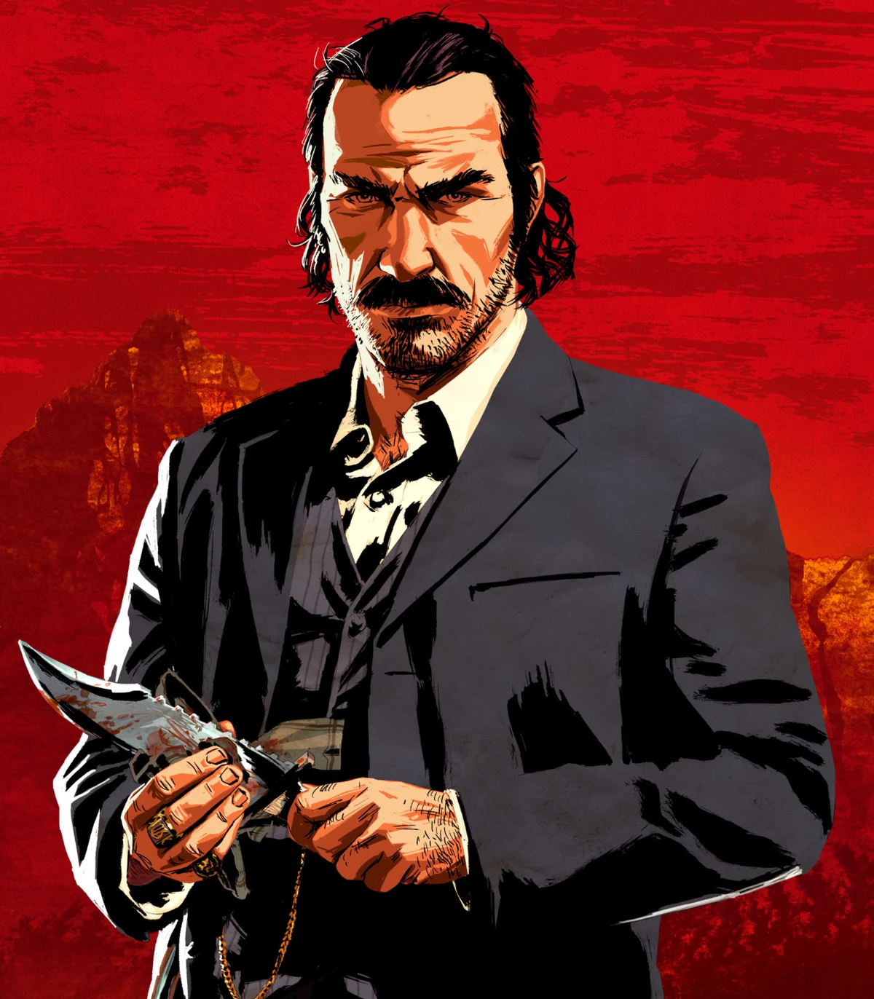

Dutch van der Linde nasceu em 1855 e foi o líder carismático e visionário da gangue que levava seu nome. Durante sua juventude, ele foi movido por ideais de liberdade e resistência ao sistema, buscando criar uma vida sem as amarras da sociedade. Esses princípios o tornaram um líder nato para um grupo de foras-da-lei, onde atraiu uma série de pessoas dispostas a segui-lo. No entanto, ao longo dos anos, a visão de Dutch se tornou cada vez mais distorcida e seus ideais começaram a ser corrompidos pela ganância e pelo poder. No início de Red Dead Redemption 2, Dutch é mostrado como um líder confiante e idealista, tentando manter a unidade e a moralidade de sua gangue. Contudo, conforme os eventos se desenrolam, sua liderança começa a vacilar. Ele toma decisões impensadas, muitas vezes colocando sua gangue em situações perigosas, e a sua obsessão por um "grande golpe" vai minando a confiança dos seus companheiros, especialmente de Arthur Morgan e John Marston. A medida que Dutch se distancia de seus princípios iniciais, sua personalidade se torna cada vez mais instável e paranoica. Ele começa a se cercar de pessoas que o bajulam e ignora conselhos de seus amigos mais próximos. A gangue começa a se fragmentar, e as tensões aumentam. No final de Red Dead Redemption 2, Dutch é confrontado por Arthur, que, já consciente da verdadeira natureza de seu líder, tenta fazer com que Dutch entenda a gravidade de suas ações. Dutch, no entanto, foge da realidade e opta por seguir sua jornada solitária, abandonando a gangue. Após os eventos de Red Dead Redemption 2, no primeiro Red Dead Redemption, Dutch aparece em uma cena crucial, onde ele, já envelhecido e mentalmente deteriorado, tenta resistir à captura. Em uma troca de tiros com John Marston, Dutch se vê sem saída e, em uma das cenas mais emblemáticas da série, se suicida, preferindo a morte a ser preso pelas autoridades, encerrando sua jornada marcada por ideais distorcidos e uma tragédia pessoal.